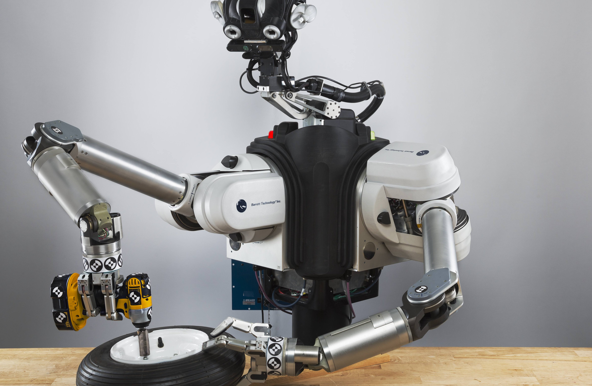

Blockchain is an advanced way of logging and protecting data and changes to a decentralised database that makes it impossible to change or hack. It's the technology that underpins digital currencies, such as Bitcoin, helping to protect against double-spending and hyperinflation in banking, and helping achieve automated supply chain management in manufacturing. Blockchain is a type of distributed ledger, one that operates as a public platform of data records that doesn't "belong" to anyone. It allows people to exchange information in real-time, with that information changing hands multiple times at once, while being verified by the technology to ensure it's legitimate. Blockchain is one of the most advanced technologies around, mainly because it has to do so many things at once too ensure that wherever the information resides, it's correct and everyone can see the same information.
Autonomous Robots reports on the theory and applications of robotic systems capable of some degree of self-sufficiency. It features papers that include performance data on actual robots in the real world. Coverage includes: control of autonomous robots · real-time vision · autonomous wheeled and tracked vehicles · legged vehicles · computational architectures for autonomous systems · distributed architectures for learning, control and adaptation · studies of autonomous robot systems · sensor fusion · theory of autonomous systems · terrain mapping and recognition · self-calibration and self-repair for robots · self-reproducing intelligent structures · genetic algorithms as models for robot development. The focus is on the ability to move and be self-sufficient, not on whether the system is an imitation of biology. Of course, biological models for robotic systems are of major interest to the journal since living systems are prototypes for autonomous behaviour.
Immersive experiences simulate our senses in order to create an illusion that transports us to another place and situation. Immersion should be realistic, engaging and satisfying. It can be experienced in different fields, it doesn’t occur only when you put on a VR headset. Whether we are playing a video game on our smartphone, watching a movie at the cinema or about to ride Space Mountain, we are dealing with immersive experiences. Designing experiences that are able to lead users to reach full immersion is all about reaching a fine balance between technology, details, suspense and several other factors.